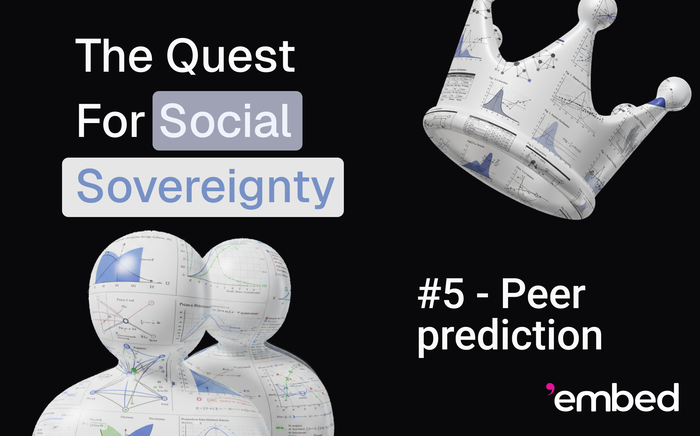
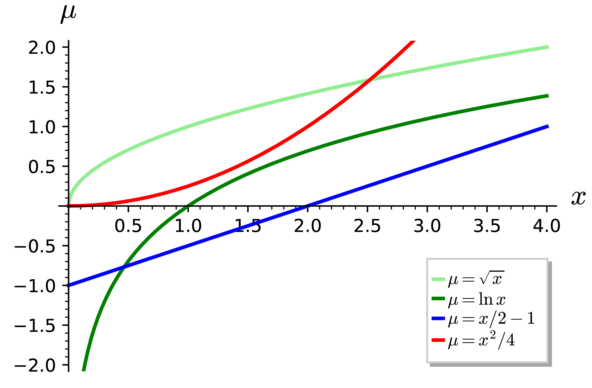

|

In our last blog post, we discussed the Bayesian Truth Serum (BTS), a mechanism for Information Elicitation Without Verification (IEWV). That such a mechanism even exists is a non-trivial observation, and the BTS remains relevant in improving survey results, as well as in other applications. However, we also observed several issues which prevent its usage in decentralized moderation.
In this blog post, we will establish the properties that we would like our mechanisms to satisfy, and will evaluate several mechanisms we studied according to them, introducing a few in the process.
So that they can be effectively employed in decentralized moderation, IEWV mechanisms should satisfy the following properties as best as possible. We will use the term agent, as is traditional, to refer to mechanism participants other than the principal, who executes the mechanism.
Truthfulness: truth-telling is an incentivized behavior;
Collusion resistance: the incentives are maintained even when a sizable portion of agents can communicate and contract;
Minimalism: each agent needs only report his observed signal (verdict);
Agent heterogeneity: no assumptions about the priors or posteriors of agents are made;
Simplicity: the description of the mechanism is easy to understand;
Small population: only a few agents are required;
Effort incentivization: the incentives persist even if truthful reports are more costly for agents to obtain than random or inaccurate reports; and
Flexible risk profiles: agents need not be risk-neutral.
The role of the truthfulness property is clear: we would like to incentivize agents to be honest, and not to deceive. Similarly, collusion-resistance discourages, or at least doesn't incentivize, agents from forming coalitions in order to profit at the expense of honest agents, the mechanism principal and, arguably most importantly, truth-telling. In our previous blog post, we reasoned that minimalism, or at least the absence of frequency reports, is a property necessary for collusion-resistance, and that simplicity, although not strictly necessary once the mechanism gains mainstream adoption, is important to make sure the mechanism's incentives still work before the mechanism becomes well-known. We also mentioned that a small population of agents is essential to keep the mechanism efficient.
Effort incentivization is something that we didn't consider yet, but which is quite important. More often than not, telling the truth can be expensive. We already mentioned truth-telling may incur risks to personal safety, but it can be costly in at least two other ways. First, it requires expenditure of cognition. In moderation, the task can be as simple as looking at an image and surfacing a feature, but it can also include reading text. More generally, for fact-checking, a significant amount of research and reasoning can be necessary to evaluate whether a particular proposition is true or false. And a second type of cost is psychological. There are numerous documented pieces of evidence that continuous exposure to certain types of online material or rhetoric can lead to mental health issues. As such, if just guessing without looking is not disincentivized, it is likely that rational agents will choose to perform that behavior.
Incidentally, one of the greatest appeals of joining a coalition is to be able to submit reports provided by the coalition coordinator without having to exert truth-telling effort. Thus, as the cost of truth-telling increases, so does the difficulty of maintaining collusion resistance.
Risk profiles are commonly modeled by utility curves [15]. A utility curve is essentially a mapping of one's wealth to one's satisfaction (or utility). The model is that agents seek to maximize their expected utility, instead of simply their expected financial position. For most people, the difference in utility between owning nothing and owning 1 BTC is much more pronounced than the difference between owning 1 BTC and owning 2 BTC. Their utility curves are thus concave (see Figure 1) and they are said to have a conservative risk-profile. Other people are risk-takers, and exhibit a convex utility curve. Contrary to popular belief, while this may indeed mean desperation, it is not necessarily irrational, something we can illustrate with the example of a person trying to fund medical treatment for a loved one, a situation in which most people would gamble if they did not have enough funds or the possibility of a reasonable loan. Finally, when a utility curve is both concave and convex, and thus linear, the agent is said to be risk-neutral.
|  |
The problem is that a risk profile close to neutral is most common in very wealthy people, because conservative risk profiles start to appear linear as wealth increases. However, with possible punctual exceptions of moderators that participate for pleasure, people that take moderation jobs do not tend to be wealthy, and may not exhibit risk-neutrality. Thus, it is important for mechanisms to be robust to their agents having different risk profiles.
There is a clever trick to allow mechanisms designed only for risk-neutral agents to work with agents of diverse risk profiles, even if those are unknown to the mechanism [19, Section 5.1]. First, the mechanism adjusts its payouts to the interval \([0, 1]\) via a simple positive affine transformation. If it would pay \(\phi_i\) to agent \(i\), it pays instead \(\phi_i' = a \phi_i + b\), where \(a > 0\) and \(b\) are coefficients chosen so all \(\phi_i' \in [0, 1]\).
Then, instead of the principal performing a direct monetary payment of \(\phi_i'\) to agent \(i\), it interprets \(\phi_i'\) as a probability, and gives agent \(i\) a “lottery ticket” that pays a constant payout \(P\) with probability \(\phi_i'\) and nothing with probability \(1 - \phi_i'\).
Counter-intuitively, this change in compensation has expected utility maximizing agents also seek to maximize the mechanism's payout in expectation. Indeed, under the new method, the expected utility of agent \(i\) is
an affine transformation of \(\mathbb{E} [\phi_i]\) with positive coefficient \(\mu_i (P) - \mu_i (0)\) (we assume \(\mu_i\) to be an increasing function). Thus, maximizing \(\mathbb{E} [\mu_i]\) is equivalent to maximizing \(\mathbb{E} [\phi_i]\).
One way to wrap one's head around this fact is to observe that the mechanism only pays two different values to each given agent, \(0\) or \(P\). Since payments in-between are not possible, the shape of their utility curves no longer matter.
Because of this trick, which improves mechanism tolerance to different risk profiles, the corresponding desideratum becomes slightly less important, and we will not consider it anymore for the time being.
The careful reader will have noticed that we have not yet discussed one desideratum. We left agent heterogeneity for last, as it is the most involved definition. When agent \(i\) performs a task \(t\), he receives a signal \(s_{t i}\) from a set of possible signals \(S\), which is the relevant information acquired during the performance of the task. For example, for image moderation, \(S\) could be the power set of a set of features, such as violence, nudity and minors, thus making the signal \(s_{t i}\) be a subset of those features. For fact checking, we may have \(S = \left\{ \texttt{true}, \texttt{false} \right\}\).
A mechanism for heterogeneous agents does not impose assumptions on the distribution of these signals. Many mechanisms do not satisfy this property because they need a precise underlying statistical model for how the signals are generated. This model usually consists of a finite set \(\Theta\) of statistical types for tasks and, for each task \(t\) of type \(\theta_t\) and agent \(i\), a prior distribution of signals \(p_{t i} (s | \theta ) = \Pr [s_{t i} = s | \theta_t = \theta ]\), the probability that \(i\) will receive signal \(s\) if \(t\) has type \(\theta\). Often, for a task \(t\) and distinct agents \(i\) and \(j\), they also model the posterior distribution of signals \(p_{t i j} (s' | s ) = \Pr [s_{t j} = s' | s_{t i} = s ]\), the probability that \(j\) will receive signal \(s'\) given that \(i\) received signal \(s\).
Besides this modeling, there are also assumptions of common priors (\(p_{t i} (s | \theta )\) doesn't depend on \(i\)), common knowledge of priors (every agent knows all agents' priors), common posteriors (\(p_{t i j} (s' | s )\) depends neither on \(i\) nor on \(j\)), common knowledge of posteriors (every agent knows all \(p_{t i j}\)) and stochastic relevance, which basically states that \(p_{t i j} (s' | s )\) is a different distribution for each \(s \in S\). Some mechanisms even require priors and posteriors to be available to the mechanism itself, for it to use them in reward calculation.
However, this is not acceptable in the context of social media, where users have different ethical, moral and aesthetic preferences, different knowledge and experience baggage and different cultures and community memberships. It would be more accurate to model users as having statistical types than tasks themselves, and even that is questionable. Therefore, we must avoid mechanisms that rely heavily on these statistical assumptions about their agents.
The Peer-Prediction Method of Miller, Resnick and Zeckhauser [12] is the quintessential example of a minimal mechanism with truth-telling incentives, but it does have very strong statistical assumptions on agents, namely all those we have listed above. In this mechanism, each agent \(i\) first makes a private report \(r_i\) of their signal to the principal (\(r_i = s_i\) if \(i\) is honest). The principal then, for each agent \(i\), elects a different reference agent \(j\) (not necessarily at random) and rewards \(i\) based on a strictly proper scoring rule [17] of the posterior \(p_t (\cdot | r_i )\) against ground-truth \(r_j\). The idea is that, in a truth-telling equilibrium, \(r_j = s_j\), so, after receiving his signal \(s_i\), agent \(i\)'s best estimate of the distribution of \(r_j\) is the common posterior \(p_t (\cdot | s_i )\). Due to the stochastic relevance assumption, if agent \(i\) would like to maximize his payout, he has no choice but to report \(r_i = s_i\) truthfully.
As this method needs homogeneous users and is not collusion resistant,
as well as having other issues, we continued our exploration. We
considered, in addition, Witkowski's Robust Bayesian Truth Serum (RBTS)
[
18
], Zhang's Knowledge-Free Peer-Prediction mechanism (KFPP) [
19
] and Jurca and Falting's collusion-resistant mechanism [
4
]. Table
1
summarizes the properties of these mechanisms, other ones we've
considered so far and the trivial pay-per-task and
reward-majority-agreement mechanisms
|
||||||||||||||||||||||||||||||||||||||||||||||||||||||||||||||||||||||||
We make a few observations about the content of this table. In majority agreement, agents that are of minority opinion and know of this fact are not incentivized to tell the truth, but to bend to peer-pressure. We considered Community Notes as effort-incentivizing in the sense that raters want to maintain their correct polarity, which requires them to at least read the notes they are rating. Finally, the pay-per-task mechanism resists collusion, but that is only because the payout is constant and thus incentivizes no behavior in particular.
The mechanism of Jurca and Faltings has very good truthfulness and collusion resistance. As long as the coalition consists of less than half of the agents (less than one third for cost-effectiveness), with the remaining agents honest, it is a dominant strategy for coalition participants to report honestly (to leave the coalition). Unfortunately, the mechanism has very strong assumptions about the agents, and even requires knowledge of their priors. Nevertheless, such truthful and collusion resistant mechanisms are so rare that we may dedicate a post in the future to this particular mechanism.
It seems difficult to come by a mechanism for heterogeneous agents, and this is not a coincidence: it has been demonstrated by Jurca and Faltings that there are no minimal mechanisms for heterogeneous agents where truth-telling is a strict Bayesian Nash equilibrium [5]. However, unlike in a survey, there is a hypothesis of that result that we can relax: a single task. Instead of running one instance of the mechanism per task, we can batch tasks and run a mechanism that demands agents to answer all of the tasks in the batch. This allows us to move statistical homogeneity assumptions from the agents to the tasks themselves, finally supporting heterogeneous agents.
We considered several such multi-task mechanisms, including the classical one from Dasgupta and Ghosh (D&G) [2], the Peer Truth Serum (PTS) of Faltings et al. [3], the Minimal Peer Prediction (MPP) and the Bayesian Truth Serum with Private Priors (BTS-PP) of Radanovic and Faltings [13], the Peer Truth Serum for Crowd-sourcing (PTSC) of Radanovic et al. [14], the Detail-Free Correlated Agreement (CA-DF) of Shnayder et al. [16], the Peer-Prediction with Heterogeneous Tasks (PPHT) of Mandal et al. [11], the Peer-Prediction with Heterogeneous Users (PPHU) of Agarwal et al. [1], the Square Root Agreement Rule (SRAR) of Kamble et al. [6] and Surrogate Scoring Rules (SRRs) from Liu et al. [10]. We also found a survey by Lehmann [9] to be very useful.
However, the Mutual Information Paradigm (MIP) by Kong and Schoenebeck [8] and its derived mechanisms Determinant Mutual Information (DMI) and, more generally, Volume Mutual Information (VMI) [7], set themselves apart in our eyes. Although they have some assumptions on their few tasks and agents, including that each agent commits to a strategy, they make truth-telling dominantly truthful, meaning that the choice of the honest reporting strategy maximizes returns in expectation irrespective of the choices of other agents. As a welcome bonus, these mechanisms are among the ones of least complexity.
We offer Table 2 as a summary of these mechanisms, running the risk of over-simplification and imprecision.
|
|||||||||||||||||||||||||||||||||||||||||||||||||||||||||||||||||||||||||||||||||||||||||||||||||||||||||||||||||||||
Table 2. Multi-task peer prediction mechanisms according to our desiderata. Here “wPBE” means a weak Perfect Bayesian equilibrium, “DUST” means Dominant Uniform-Strategy Truthfulness and “Dom.” stands for dominantly truthful. The BTS-PP mechanism has a variable but manageable number of tasks drawn at random, with the expected amount trading off cost for consistency. |
We should mention that, in our exposition of multi-task peer prediction mechanisms, we have been making the assumption of binary signals, i.e., that agents receive one of only two possible signals. For moderation, that would mean that agents report whether or not a piece of content violates a moderation policy. This assumption is due to a result, by Radanovic and Faltings, that there can be no truthful and minimal mechanism for heterogeneous agents unless signals are binary [13].
Unfortunately, we have not been able to come across a single mechanism that satisfies all of our desiderata. In particular, the only truthful and collusion resistant mechanism does not support heterogeneous agents. However, the VMI class of mechanisms comes very close, only fundamentally lacking collusion resistance. We consider them, therefore, as a better social epistemic tool than Community Notes.
Before moving on to another direction of research, we would like to dedicate our next blog post to the Mutual Information Paradigm and to the DMI mechanism, as an illustration of a VMI mechanism. We will study both how it could be used in moderation and why it fails to resist collusion.
Arpit Agarwal, Debmalya Mandal, David C. Parkes, and Nisarg Shah. Peer prediction with heterogeneous users. ACM Trans. Econ. Comput., 8(1), mar 2020.
Anirban Dasgupta and Arpita Ghosh. Crowdsourced judgement elicitation with endogenous proficiency. 2013.
Boi Faltings, Radu Jurca, Pearl Pu, and Bao Duy Tran. Incentives to counter bias in human computation. Proceedings of the AAAI Conference on Human Computation and Crowdsourcing, 2(1):59–66, Sep. 2014.
Radu Jurca and Boi Faltings. Collusion-resistant, incentive-compatible feedback payments. In Proceedings of the 8th ACM Conference on Electronic Commerce, EC '07, pages 200–209. New York, NY, USA, 2007. Association for Computing Machinery.
Radu Jurca and Boi Faltings. Incentives for answering hypothetical questions. 2011.
Vijay Kamble, Nihar Shah, David Marn, Abhay Parekh, and Kannan Ramachandran. The square root agreement rule for incentivizing truthful feedback on online platforms. 2022.
Yuqing Kong. Dominantly truthful peer prediction mechanisms with a finite number of tasks. J. ACM, 71(2):9–1, 2024.
Yuqing Kong and Grant Schoenebeck. An information theoretic framework for designing information elicitation mechanisms that reward truth-telling. 2018.
Niklas Valentin Lehmann. Mechanisms for belief elicitation without ground truth. 2024.
Yang Liu, Juntao Wang, and Yiling Chen. Surrogate scoring rules. ACM Trans. Econ. Comput., 10(3), feb 2023.
Debmalya Mandal, Matthew Leifer, David C. Parkes, Galen Pickard, and Victor Shnayder. Peer prediction with heterogeneous tasks. 2017.
Nolan Miller, Paul Resnick, and Richard Zeckhauser. Eliciting Informative Feedback: The Peer-Prediction Method, pages 185–212. Springer London, London, 2009.
Goran Radanovic and Boi Faltings. Incentives for subjective evaluations with private beliefs. In Proceedings of the Twenty-Ninth AAAI Conference on Artificial Intelligence, AAAI'15, pages 1014–1020. AAAI Press, 2015.
Goran Radanovic, Boi Faltings, and Radu Jurca. Incentives for effort in crowdsourcing using the peer truth serum. ACM Trans. Intell. Syst. Technol., 7(4), mar 2016.
Ashwin Rao. Understanding risk-aversion through utility theory. https://web.stanford.edu/class/cme241/lecture_slides/UtilityTheoryForRisk.pdf.
Victor Shnayder, Arpit Agarwal, Rafael Frongillo, and David C. Parkes. Informed truthfulness in multi-task peer prediction. 2016.
Wikipedia. Scoring rule — Wikipedia, the free encyclopedia. https://en.wikipedia.org/wiki/Scoring_rule, 2024. [Online; accessed 20-October-2024].
Jens Witkowski. A robust bayesian truth serum for small populations ( technical report ). 2012.
Peter Zhang. Beyond the bayesian truth serum: the knowledge free peer prediction mechanism. Masters, Department of Computer Science and Mathematics, Harvard University, Cambridge, MA, 2013.
1. Due to the sheer amount of detail in the information compiled in the tables in this post, we are not able to guarantee they are completely correct. We apologize in advance for any imprecision.